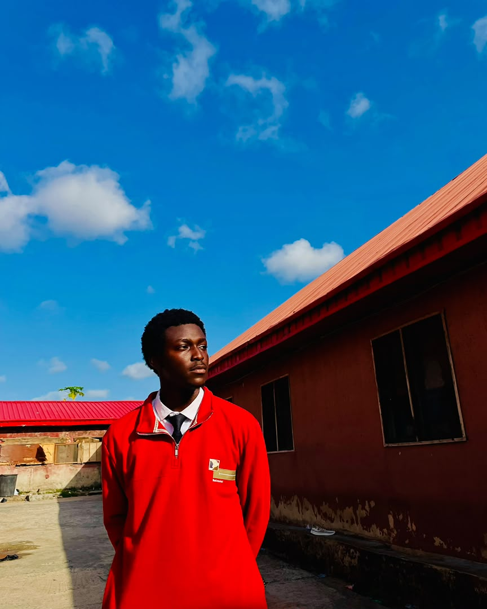
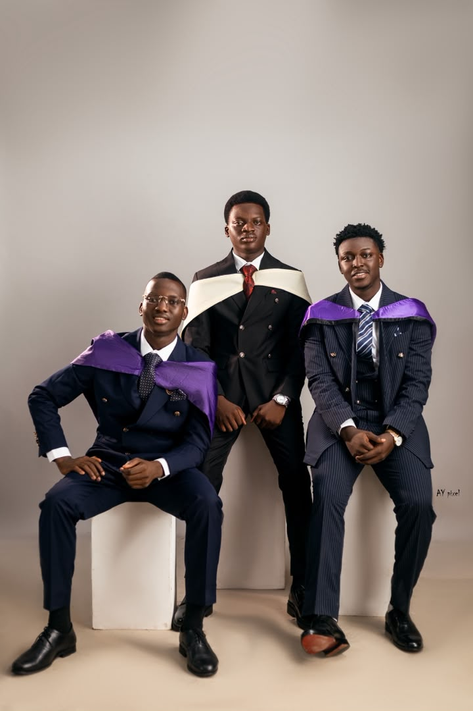
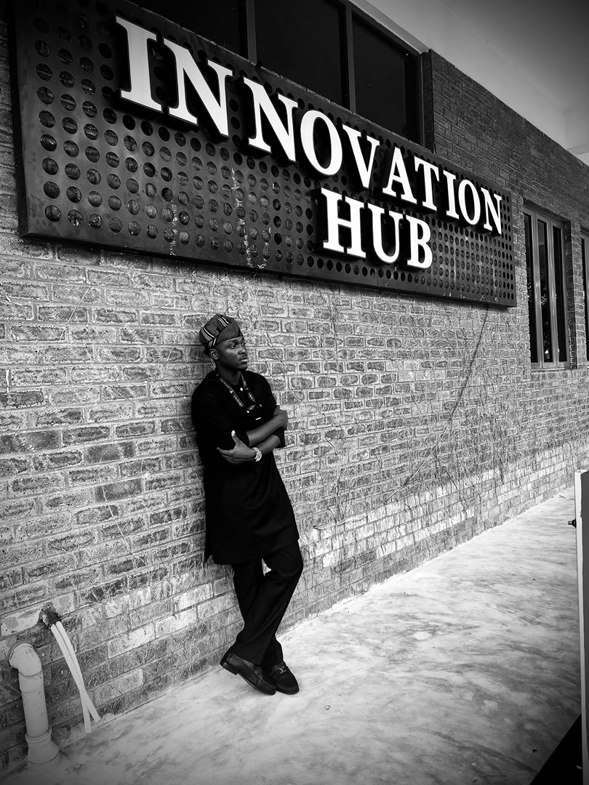
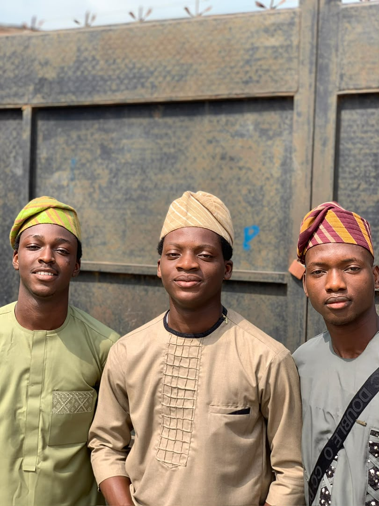
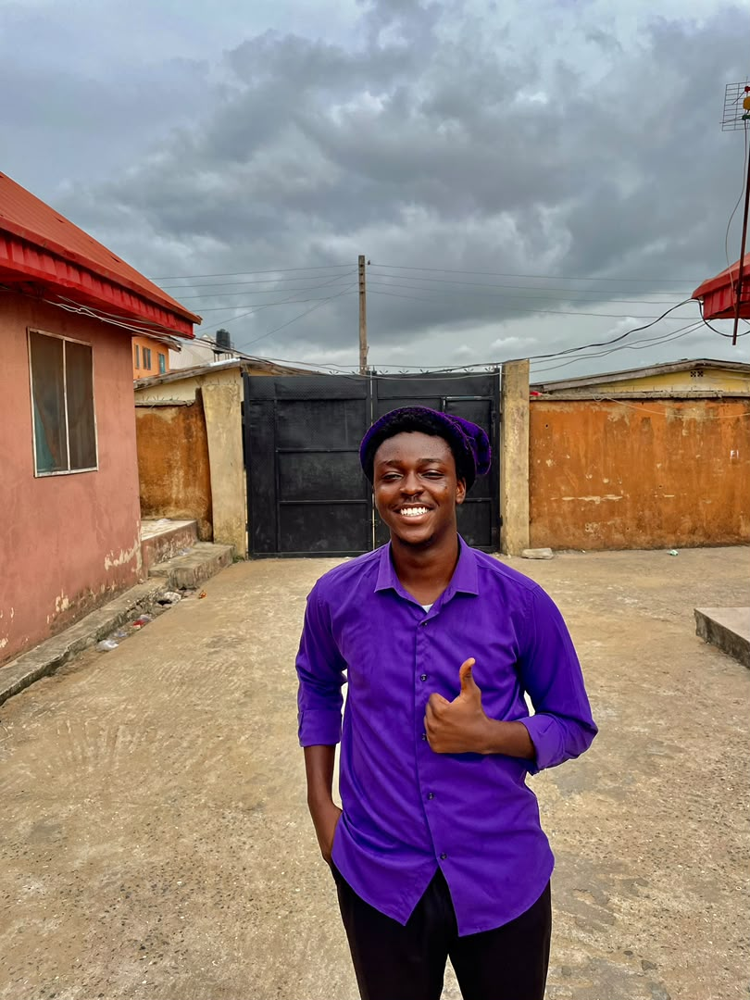
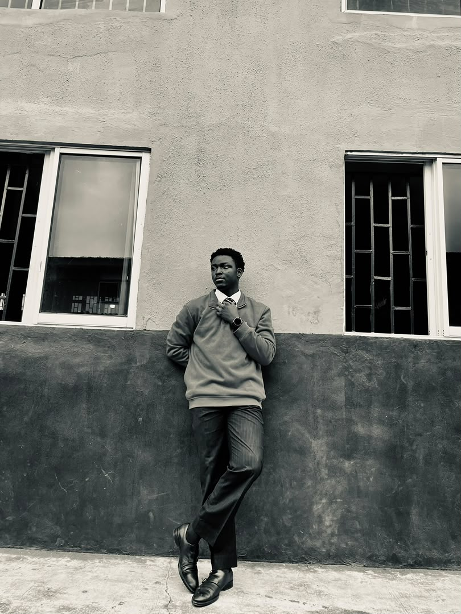

SAAS · HELPDESK
Deskly
A multi-tenant support platform with isolated workspaces, live ticket updates, SLA tracking, and a customer-friendly no-login ticket flow.
React · TypeScript · Supabase · Express
FRONT-END DEVELOPER / LAGOS, NIGERIA
I’m Samuel Adebola, a Computer Science graduate who enjoys turning tricky ideas into clear, responsive web experiences.

I’m a front-end developer and Computer Science graduate from Lagos State University. I care about the details that make a website feel simple to use: clear structure, considerate interactions, and layouts that work on every screen.
My experience includes an international front-end internship in Malaysia and IT support work in a legal technology environment. I’m especially interested in ways software can make services easier to reach, from legal tech to fintech.
A few projects that show how I think about interfaces, useful features, and the people on the other side of the screen.
SAAS · HELPDESK
A multi-tenant support platform with isolated workspaces, live ticket updates, SLA tracking, and a customer-friendly no-login ticket flow.
React · TypeScript · Supabase · Express
COMMERCE · MARKETPLACE
A fashion marketplace connecting independent sellers and shoppers, with storefronts, listings, checkout, and order management.
React · TypeScript · Supabase · Paystack
LEGAL TECHNOLOGY · CASE MANAGEMENT
A case management system created for the Legal Unit at Lagos State University.
HTML · CSS · JavaScript
EDUCATION · LEARNING PLATFORM
A course discovery and learning platform for students, with tools for instructors to create and manage courses.
React · TypeScript · Supabase
AUTOMOTIVE · INTERACTIVE WEB
A dealership experience with scroll-driven vehicle details, searchable inventory, a finance calculator, and enquiry forms.
Next.js · React Three Fiber · GSAP
TRAVEL · BOOKING
A flight booking experience with seat selection, passenger details, and bookings saved in the browser.
HTML · CSS · JavaScript
⌘ More experiments and code on GitHub ↗
AMS · Malaysia
Built responsive interfaces with HTML, CSS, and JavaScript; collaborated on reusable components, code reviews, and performance improvements in an international team.
Global T and T New Solutions · Ikeja, Lagos
Supported troubleshooting and system maintenance in a legal technology environment, and contributed to the SIWES final project and documentation.
Lagos State University · Lagos, Nigeria
Graduated August 18, 2026. Focused on software development and information technology.
React · TypeScript · JavaScript · HTML · CSS · Node.js · Express · Supabase · PostgreSQL · Figma · Git
Web Developer Bootcamp · JavaScript · Figma UI/UX · Aspire Leaders Program
There’s a person behind the projects. This little corner is ready for a few moments with friends and family.




